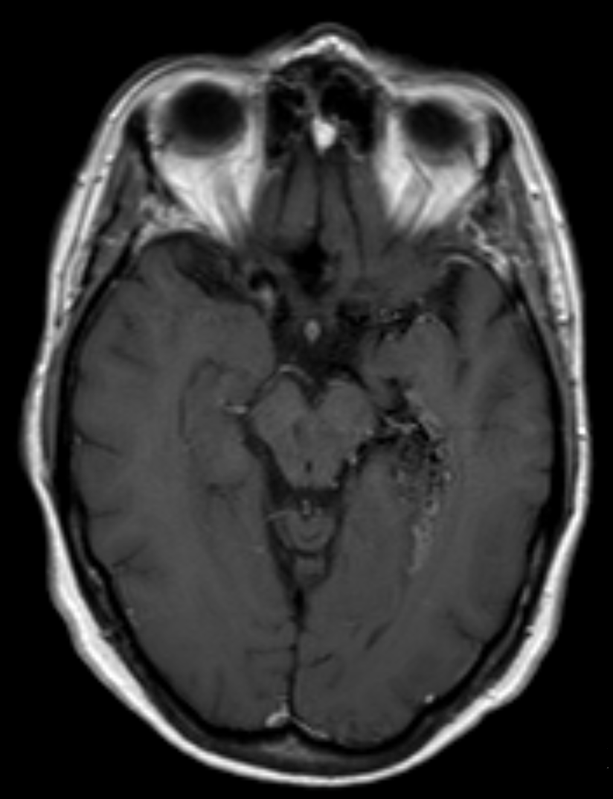

Ficha del catálogo
Malformación arteriovenosa cerebral
- Sistema
- Nervioso
- Modalidad
- RM
- Región
- Encéfalo, supratentorial o infratentorial
- Dificultad
- Avanzado
La malformación arteriovenosa cerebral es una comunicación anómala entre arterias y venas a través de un ovillo vascular sin lecho capilar interpuesto. Suele manifestarse en el adulto joven con hemorragia intracraneal, crisis convulsivas o cefalea, y constituye una causa importante de hemorragia no traumática en pacientes sin hipertensión.
Técnica
Resonancia magnética con T2, secuencia de susceptibilidad, angiografía por resonancia y estudio con contraste, complementada con angiotomografía. La angiografía por sustracción digital sigue siendo la referencia para definir la angioarquitectura y planificar el tratamiento.
Qué observar
- Ovillo de vacíos de señal serpiginosos que constituyen el nido
- Arterias aferentes dilatadas y venas de drenaje ectásicas
- Escaso o nulo parénquima funcionante dentro del nido
- Signos de sangrado previo con depósitos de hemosiderina
- Aneurismas asociados en las arterias aferentes o dentro del nido
- Gliosis y pérdida de volumen del parénquima vecino
Hallazgos
Conglomerado de estructuras tubulares con vacío de señal en T2 correspondientes a vasos de alto flujo, con arterias nutricias engrosadas y venas de drenaje dilatadas que alcanzan senos durales o el sistema profundo. No existe efecto de masa verdadero salvo que haya sangrado, y el parénquima interpuesto es escaso o nulo. Las secuencias de susceptibilidad revelan restos hemáticos de episodios previos y la angiografía demuestra el paso precoz del contraste al sistema venoso.
Perlas
El relleno venoso precoz durante la fase arterial es el signo que define la existencia de una comunicación directa y separa la malformación arteriovenosa de otras lesiones vasculares. Ante una hemorragia lobar en un adulto joven sin factores de riesgo conviene buscar de forma dirigida una malformación subyacente, incluso repitiendo el estudio cuando el hematoma se reabsorba.
Diagnóstico diferencial
- Fístula arteriovenosa dural
- No existe nido parenquimatoso; la comunicación asienta en la pared de un seno y se nutre de ramas meníngeas.
- Malformación cavernosa
- Aspecto en palomita de maíz con anillo de hemosiderina, sin vacíos de flujo ni relleno venoso precoz.
- Anomalía del desarrollo venoso
- Patrón radiado en cabeza de medusa que drena a una vena colectora única, visible solo en fase venosa y sin nido.
- Tumor muy vascularizado
- Presenta masa sólida con realce y efecto de masa, y los vasos rodean o penetran un tejido tumoral identificable.
Simuladores
- Vasos leptomeníngeos prominentes por circulación colateral en oclusión arterial crónica
- Anomalía del desarrollo venoso de gran tamaño
- Artefactos de flujo en secuencias angiográficas de tiempo de vuelo
Por modalidad
- TC
- La angiotomografía identifica el nido y los vasos nutricios con rapidez y es útil en el contexto de hemorragia aguda.
- RM
- Define la relación del nido con áreas elocuentes, detecta sangrados previos y permite el seguimiento tras el tratamiento.
Protocolo
Estudio de encéfalo con T2, susceptibilidad, angiografía por resonancia y series con contraste, seguido de angiografía por sustracción digital para el planeamiento terapéutico. El seguimiento tras radiocirugía se realiza con resonancia periódica y angiografía diferida para confirmar la obliteración.
Clasificación
El sistema de graduación quirúrgica más difundido suma puntos por el tamaño del nido, por la localización en área elocuente y por la existencia de drenaje venoso profundo, y genera grados del uno al cinco. Los grados bajos tienen menor riesgo quirúrgico y los altos suelen tratarse de forma conservadora o multimodal.
Errores frecuentes
- Descartar una malformación en un hematoma agudo sin repetir el estudio tras la reabsorción
- Confundir una anomalía del desarrollo venoso con una malformación arteriovenosa
- Omitir la búsqueda de aneurismas asociados, que aumentan el riesgo de sangrado

malformación arteriovenosa nido vascular hemorragia lobar angiografía vacío de señal radiocirugía